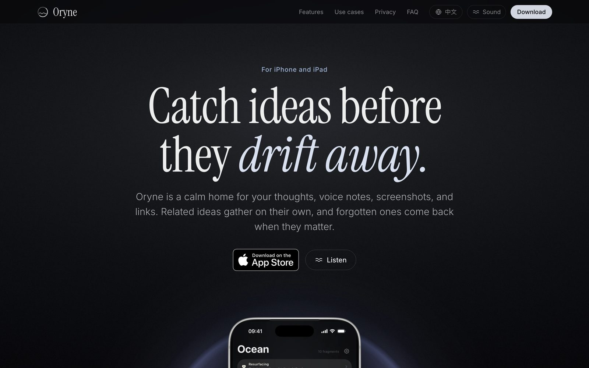
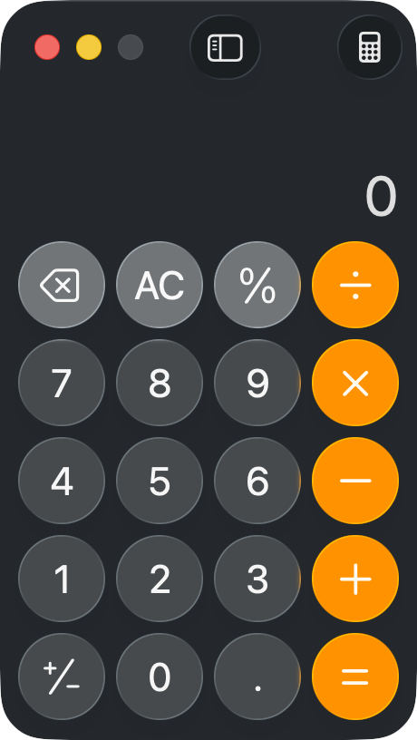
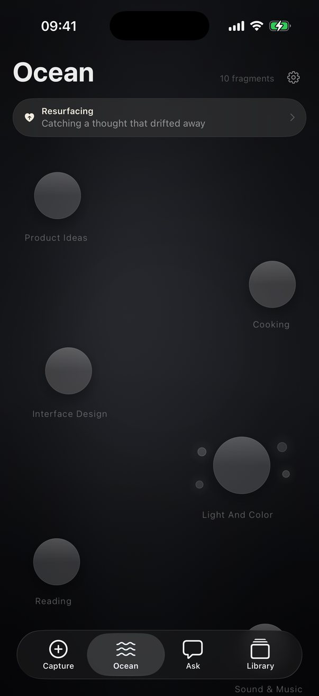

Your coding agent gets the element you point at, not a screenshot.
FreemacOS 15 or later
A real Mac desktop: a website, a Mac app, and an iPhone app. One ball points at all of them.



After Return, this is on the clipboard. Paste it anywhere.
Tested against a screenshot: same picture, same note, same model. The agent had two copies of the code, and only one was on screen.
Locant runs that edited the wrong copy. With a screenshot: 14 of 20.
39 seconds to the right file, against 80.
About half the tokens and dollars per run.
80 runs on Claude Code, graded blind. Method and statistics: the report.
Press and hold the ball. Try it in the demo above.
A region or a window, as a PNG.
The words on screen, to the clipboard.
Any pixel, as hex, rgb(), hsl(), or SwiftUI Color.
The subject on a transparent background.
After the agent's edit, run the app again. Locant finds the same element, captures it when it looks different, and keeps every iteration with the diff beneath.
Accessibility reads what is under your cursor. Screen Recording captures the pixels. There is no third prompt.
No telemetry, no accounts. The one request is a daily check for a newer version, and you can turn it off.
Every build is signed with a Developer ID and notarized by Apple. A dmg from GitHub, not the App Store.
No Dock icon. Nothing pulses, bounces, or waits for you to notice it.
Paste the capture where you want it. Or connect over MCP in Settings › Agents, say what should change, and the agent fetches the capture itself, image included.